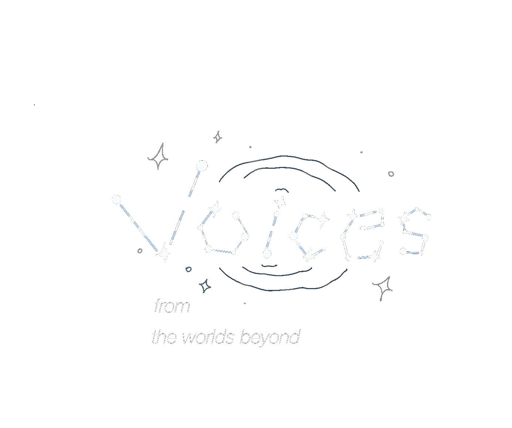

Voice from the Worlds Beyond
- interaction 6DOF MixReality
- around 7"
Introduction
Voices From the Worlds Beyond is a mixed reality stargazing experience created as part of Timeslip Radio, an interdimensional radio station exhibition that takes place in Manchester. Visitors use hand gestures to reach for real-time tracked stars and planets and hear sounds from them. While waiting, they can explore a mobile website that tracks the live position of the ISS and streams its live feed.